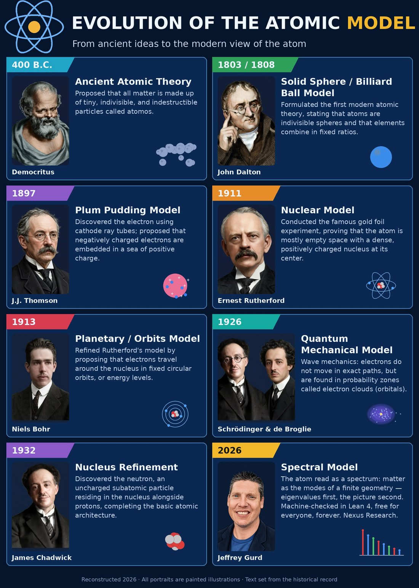

No university lab. No college degrees. 'Cause I don't have anyone telling me what to do, I make it free for everyone.
The Picture & The Full Arsenal
The Evolution of the Atomic Model, reconstructed 2026 — with the last panel filled in, and every piece of work underneath it linked on one page, for anyone to dissect and test for themselves.

Tap for the full-resolution poster: poster-full.jpg · All portraits are painted illustrations · Text set from the historical record

🔬 Dissect it yourself T1
Do not take the counts on faith. The whole corpus rebuilds from source:
git clone https://github.com/jeffgurd888/thet-logos cd thet-logos/lean lake build # every module, from scratch grep -rn "sorry" ThetLogos/ # exactly 7, all named open obligations
- The count rule (adopted 2026-10-17): a declaration counts if
theoremorlemmabegins a source line at column 0 in a counted module, on comment-stripped source. Same-line@[simp]declarations (49) are excluded from the strict count and included in the attribute-inclusive one. - The seven sorrys are named, not hidden: five T5 blocked questions in
BlockedQuestions.lean, one T3 diagonal KMS identity, one T5 tripotent-existence obligation. A full proof-dependency audit found zero transitive contamination beyond them: corpus-dependency-audit-2026-10-21.md. - Axiom check: headline theorems are verified with
#print axioms— only Lean's standard three (propext,Classical.choice,Quot.sound), nosorryAx.
Census, 2026-10-24: 4,929 strict · 4,978 attribute-inclusive · 164 counted modules
📄 The papers
- ACMD — Machine-Verified Foundations, v3 (current): doi.org/10.5281/zenodo.23444600
- v2: doi.org/10.5281/zenodo.23427964 · v1: doi.org/10.5281/zenodo.23408680 · Concept DOI (all versions): doi.org/10.5281/zenodo.23408679
- The code — the full Lean corpus, MIT-licensed: github.com/jeffgurd888/thet-logos
🧩 The finite Standard Model — assembled T1
All four SM-Match tracks stand at the finite level. The gauge-algebra track — the last open one — closed on 2026-10-23 by a representation in which additivity, order-zero, and the first-order condition hold simultaneously. Hypercharges, masses, and couplings remain inputs; three-generation triplication is imposed, not derived. That is stated here at the same size as the result, because it is part of the result.
- SM-Match dossier: sm-match-2026-10-11.md
- Track 1 closure (Route B): track1-routeb-2026-10-23.md
🖐️ The work you can touch EXHIBITS
- 🚶 The Walker — a theorem you can watch walk: diffusion with a defect, E[r²] = x² + y² + t, live in your browser.
- 🧊 The Tesseract — the rotating 4-cube: 16 vertices, 32 edges, the geometry before the heat.
- 🌀 The Vortex Stepper — phase winding you can step through, anchored to a machine-checked theorem.
- 🌌 The Vacuum Portrait — numerical portrait of the finite vacuum (data + method in the repo; labeled numerical, not a theorem).
⚖️ The Gram campaign — Stage 1b-B T1 for U(1) 5 CLOSURES
Reflection positivity of lattice gauge theory. Closed: positivity of the U(1) Wilson theory at every β ≥ 0 is machine-checked (Route C), and the integrated/series Gram criterion stands at general (G, ρ). Open: the clause at general (G, ρ). The campaign's proved obstructions — four families now closed around the clause, published at full rank, because a surveyed wall is a result:
- Route C + the criterion: gram-route-c-2026-10-23.md · Stage record: pitch-4-stage-1b-b-2026-10-17.md
- Kill 1 (T4c) — word-entry features die on the sandwich monomial: gram-route-b-t4c-obstruction-2026-10-23.md
- Kill 2 (T4c′) — factored occurrence features die on the strict pair vs the mirror pair, (k, a) vs (j, i): gram-route-b-t4cp-obstruction-2026-10-24.md
- Kill 3 (R0) — the polarization regrouping dies at its pre-registered gate test: gram-route-b-r0-obstruction-2026-10-24.md
- Kill 4 (TM R2) — transfer-matrix positivity reduces to positive-definiteness of the seam kernel, whose only Gram factorization is the fenced-off word series: gram-transfer-r2-obstruction-2026-10-24.md
- Kill 5 (F2, the Damping Lemma) — the third family's assembly stands (the seam kernel's Gram identity is proved), but its marginals cannot factor through a common Ξ: the arc split puts three links on one side and one on the other. The route terminates here — no fifth family; the next direction is a new route decision: gram-third-family-f2-partial-damping-kill-2026-10-24.md
- Kill 6 (Option 1, by computation) — the one road that bypassed factorization, direct assembly of the seam kernel, was gated on a single finite computation at (S3, standard irrep, N = 2, β = 1): the mirrored kernel's quadratic form has eigenvalue −8.38, its witness carried entirely by the plane links. Options 2 and 5 were staked on the same gate and close with it. What survives is a statement-level question — the corpus's own form averages those plane links, and that averaged kernel has never been computed: seat-kernel-gate-kill-2026-10-24.md
🧱 The boundary operator — dynamic boundary DB1 STANDS
The reflection plane is a boundary, and its dynamics is the seam kernel. DB1 names it — Bdry — and proves its basic theory at general (G, ρ): strictly positive and real; at β = 0 identically 1, with the two halves decoupled (Haar × Haar — the halves interact only through the boundary); invariant under reflection at every β. DB2 (expansion stability, reduced form) landed PARTIAL: the β = 0 control and the locality transport stand, and the naive cross-size identity is killed by name — its differing factor (an extra plaquette stratum, proved nonempty) is exhibited as a theorem. Positive-definiteness is nowhere asserted — that was the dead route's territory, and the fence is on the module's face: dynamic-boundary-db1-2026-10-24.md · DB2: dynamic-boundary-db2-partial-2026-10-24.md
The three anchors compose: LatticeContainment packages silence at the null (NullStart), the transparent boundary at β = 0, and pairing-only-through-the-boundary as one citable theorem, containment_package — asserting nothing new, fenced on its face. containment-package-brick-2026-10-24.md
🧪 The toy models — verdicts kept TOY
- Toy atom (finite-difference hydrogen, built from the real Hamiltonian): RHYME — levels and spectral lines land within ~1% at the finest grid. Agreement is the numerical method working, not a derivation from first principles: toy-atom-verdict-2026-10-23.md
- Toy periodic table (every element, Z = 1–118, two registered runs): NO CORRELATION — Pearson 0.252, Spearman 0.403. The sawtooth skeleton is present (noble-gas maxima, alkali minima); nearly half the rows fail to converge. Published at the same rank as the rhyme: toy-periodic-verdict-v2-2026-10-23.md
🏆🎯 The Millennium board DECLARED GOAL
The Clay Millennium Prize Problems are this lab's declared horizon — Yang–Mills existence and the mass gap first among them. Standing answer, rechecked 2026-10-24: NO CLAIM on any of them. Four dials would have to move before the odds on this program's own framework change — one measured number derived rather than input; one gravity object surviving audit; one continuum-limit theorem; one externally confirmed novel prediction. Moved so far: zero of four. The scaffolding climbs in public anyway.
🏛️ The Foundation
"Learn all that we can from anywhere and store it always for everyone for free FOREVER."
That is the charter of this lab — a digital university lab for ALL. Everything may be learned and stored; only the verified may be taught as fact; nothing is paywalled, ever. The mission it serves, Priority #1: solve world hunger and homelessness.
- Nexus Research — the lab's name; being formalized as a registered trade name (DBA) of Eco-Kleen Co. LLC, Schoolcraft, Michigan.
- Support the work: Cash App — $Gurd888. Every dollar goes to the work, and the work stays public — proof of work is the receipt.